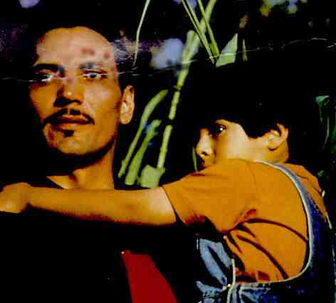

Mi FAMILIA/B+, B+
US/1995/COLOR/WIDESCREEN 1.85:1/STEREO SURROUND, AC-3/126 MINUTES/DIRECTED BY GREGORY
NAVA/STARRING JIMMY SMITS, ESAI MORALES/NEW LINE/32 CHAPS/2 DISCS/CLV/$49.99
The love of family is warmly depicted in My Family, a generational drama that
chronicles the experience of one Mexican-American family’s struggle to cope with the
ever-changing life of Los Angeles. This love is reflected in the photography and the
music, and too in the narration of Edward James Olmos, playing the eldest son,.
Olmos’s delivery has a lovely wistful quality to it. His voice produces a woodwind
timbre adding its own music to the celebration of My Family.
This is very effective story telling. The end line, "I remember mi familia,"
must be an intentional reference to I Remember Mama, a classic from director George
Stevens which used the same structure to wonderful effect. My Family is larger in
scope than its predecessor, but the writer narrating the story is
a time-honored tradition of Hollywood movie-making style.
Gregory Nava creates a fine looking film. He has strong command of his cinematic tools.
It translates to a rich and rewarding experience with My Family. Nava extracts
excellent performances from his actors. Jimmy Smits  is perfectly cast as
the brooding Jimmy, the youngest of the Sanchez boys. His screen work here is far and away
the best of Smits. Esai Morales is an appropriately fiery Chucho, the brother whose life
takes the orbit of a comet. Eduardo Lopez Rojas is absolutely wonderful as Jose Sanchez,
the scion of the family. Rojas’ face, weathered and full of character, is a map of
life. Nava understands this and uses the camera to capture the nuances of this
actor’s skill.The cinematography and music are lively additions to this rich saga of
the Sanchez family. The camera is graceful and the musical cues provide added tone to the
mood.
My Family has been given an excellent disc treatment. Included with the film is
a featurette about its production. The brief moments of reflection by the actors and
director revisits many of the strong emotional moments of the film and works well to
enrich the overall impact of experiencing the film. There are some minor moments of
excessive grain in the transfer, but the warm, earth-toned color palette that dominates
the movie is extremely pleasant to look at on disc. The sound has an excellent snap to it.
The powerful bass is best exemplified when Maria crosses the river on her return to
California. The surround information is detailed with a fabulous openness. This is a fine
disc of a very fine film. My Family is a worthy experience to be shared. Don’t
let it slip by unnoticed. |